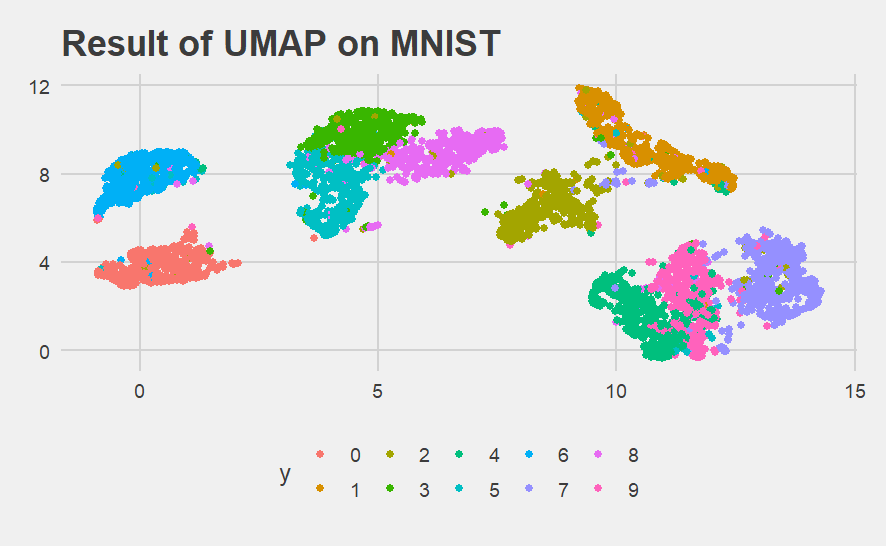

UMAP이란…
UMAP (Uniform Manifold Approximation and Projection)은 고차원 데이터를 저차원 공간으로 축소하는 비선형 차원 축소 기법 중 하나입니다. UMAP은 t-SNE와 유사하게 데이터의 군집 구조를 보존하면서 고차원 데이터를 시각화하거나 차원 축소하는 데 사용됩니다. 그러나 UMAP은 기하학적 특성을 더 잘 보존하고, 계산 효율성이 더 높아 대규모 데이터셋에도 적용 가능하다는 장점이 있습니다.
UMAP 알고리즘의 주요 과정은 다음과 같습니다:
- 고차원 데이터의 지역 구조 파악: 각 데이터 포인트의 근처 이웃을 찾아 데이터의 지역적 구조를 파악합니다. 이 과정에서는 일반적으로 k-최근접 이웃(KNN) 알고리즘이 사용됩니다.
- 지역 구조를 기반으로 한 고차원 데이터의 그래프 생성: 각 데이터 포인트와 그 이웃 간의 유사도를 기반으로 고차원 데이터의 그래프를 생성합니다. 이 때, 거리 측정에는 주로 유클리디안 거리나 코사인 유사도를 사용하며, 가중치는 멀리 떨어진 포인트에 대해 더 낮은 가중치를 부여하는 방식으로 할당됩니다.
- 저차원 임베딩을 위한 그래프 생성: 저차원 공간에서도 원본 고차원 데이터의 지역 구조를 유지하려고 노력하며, 그래프 기반 최적화를 통해 고차원 그래프와 저차원 그래프 간의 거리를 최소화합니다.
- 최적화: 그래디언트 디센트(Gradient Descent)와 같은 방법을 사용하여 저차원 임베딩 공간의 데이터 포인트 위치를 조정하면서, 고차원 그래프와 저차원 그래프 간의 거리를 최소화하는 위치를 찾습니다.
UMAP은 t-SNE에 비해 기하학적 특성을 더 잘 보존하고, 계산 효율성이 높아 대규모 데이터셋에도 적용할 수 있는 장점이 있습니다. 또한, UMAP은 차원 축소 결과를 통해 고차원 데이터에서의 군집 구조와 패턴을 시각적으로 이해하기 쉽게 해줍니다. 이러한 이유로 UMAP은 많은 데이터 과학자들이 선호하는 차원 축소 기법 중 하나입니다.
library(reticulate)
library(tidyverse)import numpy as np
import matplotlib.pyplot as plt
from sklearn import datasets
import umap
# Load the MNIST dataset
mnist = datasets.fetch_openml('mnist_784')
X, y = mnist.data, mnist.target
# Select a subset of the dataset to reduce computation time
n_samples = 5000
X_sample = X[:n_samples]
y_sample = y[:n_samples]
# Apply UMAP
umap_reducer = umap.UMAP(n_components=2, random_state=42)
X_umap = umap_reducer.fit_transform(X_sample)
y_sample = np.asarray(y_sample)X_umap <- py$X_umap
y_sample <- py$y_sample
umap_df <- tibble(x1 = X_umap[,1], x2 = X_umap[,2], y = y_sample)
head(umap_df)# A tibble: 6 × 3
x1 x2 y
1 4.05 7.81 5
2 0.744 3.75 0
3 10.9 0.124 4
4 11.9 7.83 1
5 11.6 2.26 9
6 8.29 5.54 2# Draw Plot
umap_df |>
ggplot(aes(x = x1, y = x2, color = y)) +
geom_jitter() +
ggtitle("Result of UMAP on MNIST")+
ggthemes::theme_fivethirtyeight()